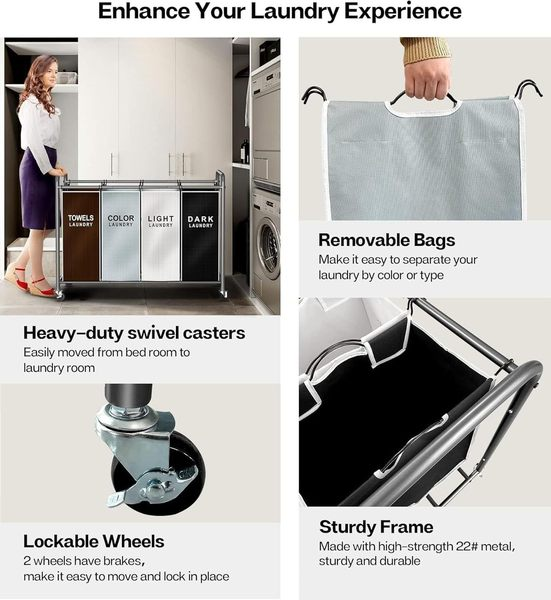

Laundry rooms are hard to organize for a specific reason: the work they support has multiple stages. Sorting, washing, drying, folding, and ironing all happen in the same small space—but most laundry rooms are only set up for one stage at a time. The result is a room that constantly feels in-progress and overwhelmed, even when the laundry itself is under control.
The principle behind a well-organized laundry room is workflow design, not just storage. Every item you add should reduce friction in a specific stage of laundry—not simply hold more things. A sorting hamper eliminates a step before wash day arrives. A wall-mounted drying rack reclaims the floor. A magnetic shelf converts the dead top of the machine into a usable work surface. When each product solves a stage-specific problem, the entire workflow runs faster and the room stays calmer between uses.
The 7 products below each target a different workflow bottleneck. You don't need all seven. Identify which laundry stages feel most chaotic in your space, and start with those.
1. Magnetic Washer & Dryer Shelf
The top of your washer and dryer is often the only available flat surface in a small laundry room, but utilizing it can be frustrating because the intense vibrations from spin cycles cause items to vibrate right off the edge. A magnetic shelf fundamentally solves this by transforming the curved, slippery top of your machine into a secure, walled tray. By establishing a stable drop zone right where you do the work, you reclaim wasted vertical space without installing permanent shelving.

Magnetic Washer & Dryer Shelf
- Features ultra-strong magnets to stay secure during spin cycles
- Designed with a raised lip to prevent items from falling behind machines
- Instantly adds usable counter space to the top of your washer
2. Clothing Rack with Storage Mesh Shelf
Draping wet clothes over doors, chairs, or shower rods creates chaos throughout your entire home on laundry day. When you lack built-in drying rods, a mobile garment rack acts as a dedicated drying station that keeps the mess localized. Because it's on wheels, you can roll it out into an open area for maximum airflow while garments dry, and then instantly collapse or wheel it into a tight corner once everything is put away.

Clothing Rack with Storage Mesh Shelf
- Heavy-duty metal construction supports thick, wet garments
- Features a bottom storage shelf perfect for laundry baskets
- Equipped with smooth-rolling casters for easy mobility
3. Laundry Hamper Sorter Cart
Sorting laundry on the floor is back-breaking work that eats up valuable time and leaves your laundry room looking like a disaster zone. The most efficient organizational systems eliminate steps from your workflow. By using a multi-bag sorter, you separate lights, darks, and delicates at the very moment you discard them. This preventative sorting means that when laundry day arrives, you simply grab a full bag and dump it straight into the wash.

Laundry Hamper Sorter Cart
- Includes 3 removable bags to effortlessly pre-sort lights, darks, and delicates
- Each bag features dual handles for easy lifting and carrying
- Heavy-duty locking castors glide smoothly across any floor type
4. Wall Mounted Ironing Board Holder
Because of their tall, awkward shape, ironing boards are notorious for constantly tipping over and creating a visual eyesore when leaned against a wall. Leaving large items on the floor instantly makes a small space feel cluttered and claustrophobic. By mounting a dedicated holder on the wall or over the back of the door, you not only protect the board from damage but also reclaim a significant amount of floor space, creating a much cleaner aesthetic.

Wall Mounted Ironing Board Holder
- Compact wall-mounted design gets your ironing board entirely off the floor
- Made of heat-resistant steel to safely store a hot iron
- Includes over-the-door hooks and wall-mounting hardware
5. Wall-Mounted Folding Drying Rack
Traditional wooden or metal drying racks are incredibly bulky; when fully extended, they can easily consume the entire walkable area of a small laundry room, trapping you in a corner. A wall-mounted accordion rack is the perfect space-saving alternative because it operates strictly on demand. It expands outward to hold multiple wet garments, and then collapses completely flush against the wall, restoring your floor plan instantly.

Wall-Mounted Folding Drying Rack
- Collapsible accordion design keeps your floor completely clear
- Pushes entirely flat against the wall when not in use
- Durable aluminum construction handles heavy, wet garments with ease
6. Slim Rolling Laundry Cart
Most people ignore the narrow, awkward gaps between their appliances and the wall, viewing them as dead space that only collects dust. However, in a tiny laundry room, every single inch matters. A slim, slide-out cart is specifically engineered to fit into these tight crevices, effectively creating a hidden pantry for your cleaning supplies. This allows you to remove visually chaotic bottles from your open shelves and keep them tucked away until exactly when you need them.

Slim Rolling Laundry Cart
- Ultra-slim profile slides perfectly into tight 5-inch gaps
- Features multiple tiers to organize all your detergents and stain removers
- Built with smooth-gliding wheels and a sturdy handle for easy pull-out
7. Laundry Detergent Dispenser Set
Laundry detergents and softeners are typically sold in oversized, brightly colored plastic jugs that create massive amounts of visual noise. When your shelves are filled with mismatched branding, the room feels cluttered even if it's perfectly organized. Decanting these liquids into uniform, clear dispensers instantly elevates the space by providing a cohesive, minimalist look. Furthermore, these slim dispensers often take up a fraction of the shelf depth compared to the original bulky packaging.

Laundry Detergent Dispenser Set
- Uniform containers drastically reduce visual clutter from ugly plastic jugs
- Precision pump mechanism prevents messy drips and sticky spills
- Transparent design ensures you always know when it's time to refill
By swapping out bulky items and optimizing the hidden gaps, walls, and tops of your machines, your tiny laundry room can instantly become a highly functional, organized workspace.